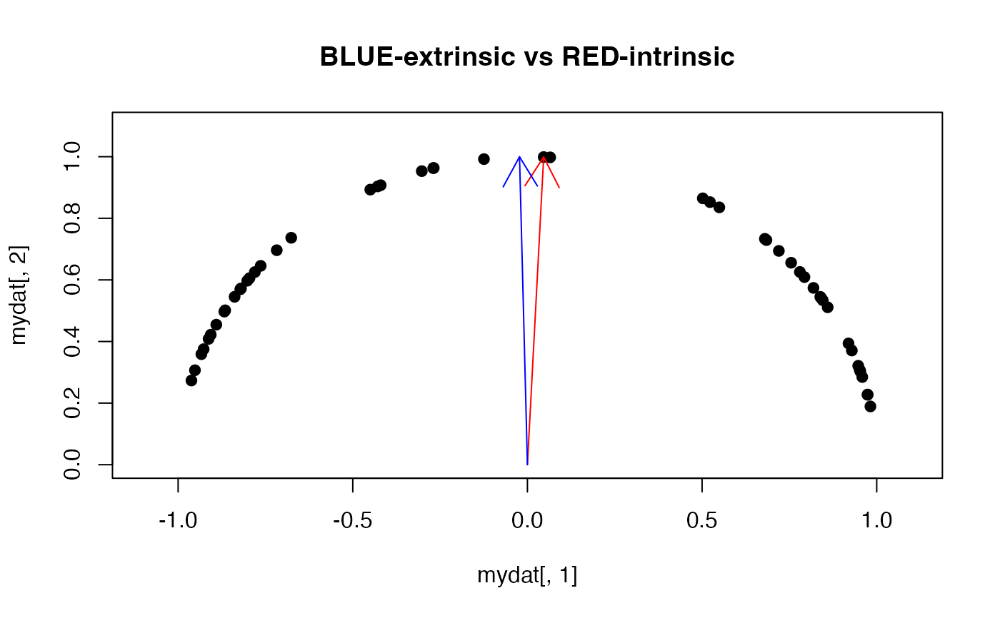

Given \(N\) observations \(X_1, X_2, \ldots, X_N \in \mathcal{M}\),
compute Fréchet median and variation with respect to the geometry by minimizing
$$\textrm{min}_x \sum_{n=1}^N w_n \rho (x, x_n),\quad x\in\mathcal{M}$$ where
\(\rho (x, y)\) is a distance for two points \(x,y\in\mathcal{M}\).
If non-uniform weights are given, normalized version of the median is computed
and if weight=NULL, it automatically sets equal weights for all observations.
Arguments
- riemobj
a S3
"riemdata"class for \(N\) manifold-valued data.- weight
Finite nonnegative observation weights with positive sum. They are normalized internally.
NULLuses equal weights. Zero-weight observations are validated but do not enter the calculation.- geometry
Geometry name or specification.
NULLselects the default geometry. Legacy"intrinsic"and"extrinsic"aliases remain available for supported combinations. SPD names include"affine_invariant"and"log_euclidean".- ...
Named controls:
- maxiter
Positive maximum number of accepted iterations (default 50).
- eps
Positive absolute tolerance for the compatible subgradient residual (default
1e-5).- max_backtrack
Positive maximum number of trial steps per iteration, at most 1024 (default 50).
- trace
Whether to retain the iteration history (default
FALSE).- init
Optional initial matrix with the observation dimensions. Closed-form calculations do not use an initializer.
Unknown controls are errors.
Value
A riem_summary object retaining median and
variation, plus objective, resolved geometry, normalized
weights, converged, termination, iterations,
subgradient_residual when applicable, controls, and an optional
trace. variation equals the normalized weighted sum of
distances at the returned matrix; for a projected ambient median this is
a descriptive manifold cost, not the optimized ambient objective.
An unsuccessful iteration warns and returns the last accepted estimate.
Details
Intrinsic medians use a modified Weiszfeld direction with backtracking. Coincident observations retain their subgradient mass, and an observation is accepted as a nonsmooth solution only after the relevant certificate is checked. On nonconvex manifolds, stationarity is local.
For the log-Euclidean SPD chart, the extrinsic route computes the geometric
median of matrix logarithms and exponentiates it. For a curved embedding
such as the sphere or Grassmann manifold, the returned estimator is the
projection of an ambient geometric median. It need not minimize the sum
of chordal distances constrained to the manifold. The estimand and
diagnostic_scope fields identify this distinction; convergence and
trace describe the ambient optimization. ambient_objective records
its cost before projection. An ambiguous inverse projection is an error.
Examples
#-------------------------------------------------------------------
# Example on Sphere : points near (0,1) on S^1 in R^2
#-------------------------------------------------------------------
## GENERATE DATA
ndata = 50
mydat = array(0,c(ndata,2))
for (i in 1:ndata){
tgt = c(stats::rnorm(1, sd=2), 1)
mydat[i,] = tgt/sqrt(sum(tgt^2))
}
myriem = wrap.sphere(mydat)
## COMPUTE TWO MEANS
med.int = as.vector(riem.median(myriem, geometry="intrinsic")$median)
med.ext = as.vector(riem.median(myriem, geometry="extrinsic")$median)
## VISUALIZE
opar <- par(no.readonly=TRUE)
plot(mydat[,1], mydat[,2], pch=19, xlim=c(-1.1,1.1), ylim=c(0,1.1),
main="BLUE-extrinsic vs RED-intrinsic")
arrows(x0=0,y0=0,x1=med.int[1],y1=med.int[2],col="red")
arrows(x0=0,y0=0,x1=med.ext[1],y1=med.ext[2],col="blue")

par(opar)